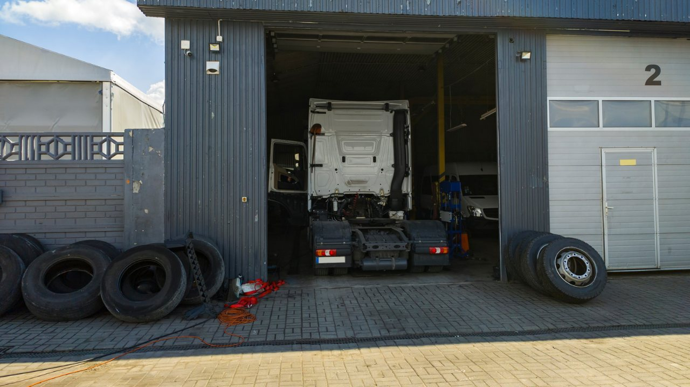

Home / Blog / Phasing In-House Tire Work
IN-HOUSE RETREADINGA fleet does not have to decide between outsourcing everything and building a full retread plant. Each stage pays its own way and produces the data that tells you whether the next stage will.
Published November 19, 2026 · Good Hope Retreaders

For most fleets, "in-house retreading" sounds like a single big decision: build a plant or don't. In practice the work breaks into three layers. Each one can be brought in-house separately, and each makes the next one cheaper and less risky. A fleet that controls its repairs and its casings already has most of the knowledge a retread line needs, and it has real data instead of estimates when it decides whether to build one.
This article walks through the three stages, what each involves, and the evidence that supports doing them in this order.
The American Transportation Research Institute's 2026 Operational Costs of Trucking update, which covers 2025, put the average tire cost at about 5.0 cents per mile, up from 4.7 cents. That 6.4% rise was one of the largest percentage increases of any cost line. Repair and maintenance overall rose to 21.5 cents per mile, and the total cost of running a truck reached a record $2.336 per mile. ATRI's early 2026 data showed tire costs easing by 4.8% in the first quarter, a reminder that fleets mostly do not control tire prices. A fleet can, however, control how many miles it gets from each casing, and that is the lever in-house work pulls.
The cheapest stage, and the one with the fastest payback, is doing puncture repairs properly and in-house. "Properly" carries most of the weight. Industry rules require a plug and patch together, the tire off the rim with an internal inspection, and the repair confined to the crown within size limits (up to 3/8 in. for truck tires). We cover the details in our puncture repair guide.
This stage matters for retreading because repairs decide whether a casing survives. Trade press reports that retreaders regularly find improperly repaired tires and often have to scrap the casing because the damage has spread. The Tire Industry Association's training lead argued in FleetOwner in March 2026 that most repair failures come from not following procedures, not from the materials. Following the guidelines keeps the tire in service and keeps the casing retreadable.
Before a fleet retreads a single tire itself, it can take control of its casings: when tires are pulled, how casings are screened and stored, which ones go for retreading, and how many times. Trade guidance has long advised fleets to set their own casing policy covering casing condition, repairs and the number of retreads, and to be directly involved in setting the criteria rather than leaving them to the retreader. Retreaders inspect every casing against acceptance criteria that can include fleet-specific requirements. A fleet that writes those requirements and keeps the records to back them up is in a much stronger position than one that sends tires out unsorted.
This stage does not change who retreads your tires, but it gives you the numbers. After a year you know how many retreadable casings your fleet generates, what share pass inspection, and what you are paying per retread. Those are the inputs for the Stage 3 decision.
With repair and casing data in hand, the question of an in-house line becomes arithmetic. On price, a 2025 market report citing Tire Retread & Repair Information Bureau figures put the average truck retread at about US$243, against about US$406 for a new truck tire. The gap is roughly 40%. The open question is whether your own casing volume can keep a line busy enough to beat what you pay outside today.
We cover that arithmetic in detail elsewhere: line sizing, set-up cost, payback period and floor layout. Fleets that reach this stage after Stages 1 and 2 already have trained repair technicians, which helps given the industry's technician shortage. They also have a casing stream they understand and a skiving and repair skill set that carries straight onto the retread line.
Any arrangement where a single outside supplier controls a large fleet's repairs, casings and retreads limits the fleet's leverage. The fleet works to that supplier's schedule, pricing and acceptance decisions, and it has little of its own data to challenge them. Staging the move in-house builds the fleet's own capability and records one layer at a time. Even a fleet that stops after Stage 2 negotiates from a stronger position, because it knows its casing yields and repair history. A fleet that goes on to Stage 3 does so with evidence rather than a sales pitch.
| Stage | What you bring in-house | What it gives you |
|---|---|---|
| 1. Repair bay | Puncture repairs to industry standard | Fewer scrapped casings; faster turnaround on flats; repair records |
| 2. Casing program | Pull points, screening, storage, policy, tracking | Control over which casings get retreaded; salvage-rate and cost data |
| 3. Retread line | Buffing, building, enveloping, curing, final inspection | Control of retread cost, pace and quality; casing value kept in the fleet |
Good Hope Retreaders supplies fleets directly from the manufacturer. That covers repair-bay tools, inspection equipment and, when you are ready, a complete retread line, plus the consumables to keep it running. We offer setup guidance and local Ontario service, and pricing is transparent and all-in, in Canadian dollars. We do not run shops for customers or franchise them. We equip and supply fleets so they can run their own. Tell us which stage you are at and your fleet size.
Talk to us about your tire program →Send us your requirements and we'll get back to you within 24 hours with pricing and lead times — no obligation.